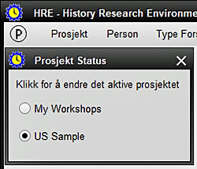
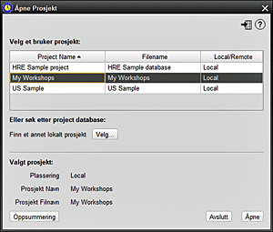

Denne skjermen lar deg åpne et eksisterende HRE-prosjekt fra hvilket som helst sted. Det blir da det AKTIVE PROSJEKTET. HRE tillater opptil tre prosjekter å være åpne når som helst, men bare ett kan nomineres til å være AKTIV. Dette vil enten være det siste prosjektet som ble åpnet ELLER prosjektet som ble valgt med "P" Prosjektrådsymbolet på slutten av menylinjen. RASK ÅPNING: nylig brukte HRE-prosjekter vises som en liste nederst i prosjektmenyen, under menyalternativene. Nylig prosjekter, identifisert av HRE-logoen, kan åpnes ved å klikke på prosjektnavnet.  1. For å åpne et eksisterende HRE-prosjekt, BROWSE til databaseplasseringen hvis det ikke vises i standardlisten. Prosjekter kan være lokale, i et nettverk eller en flyttbar stasjon 2. Det valgte prosjektets navn og gjeldende filnavn vises, og et SAMMENDRAG kan vises 3. Klikk på ÅPNE (eller dobbeltklikk på prosjektnavnet) for å åpne prosjektet, eller AVBRYT for å gå ut av dette skjermbildet 4. Når et prosjekt er åpnet, blir det automatisk gjort til det aktive prosjektet 5. Du kan når som helst velge å endre Active Project. |
|
Relaterte temaer |